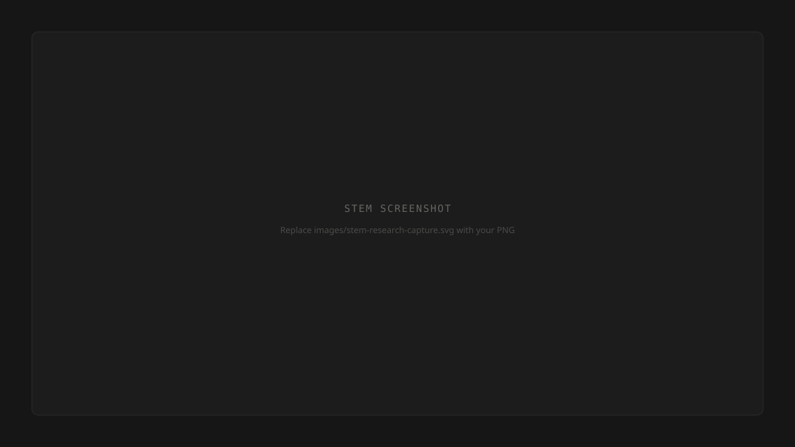

Rose started as a feedback decoder. Paste in the feedback you got from your manager, and she tells you what it actually means, whether it's fair, whether it reflects bias, and what to do with it. That's still what she does. But behind that simple interface is a knowledge system I've been building deliberately, and that's what I want to write about here.
Rose runs on Claude. Her intelligence comes from a system prompt, a structured document that tells her who she is, what she knows, and how to behave. Think of it as her brain. It has layers: her persona and values, her knowledge base, and her interaction rules. When someone pastes feedback into Rose, she's drawing on all of it at once.
The knowledge layer is where it gets interesting. Rose's brain is grounded in specific scholarship: feedback science from the Harvard Negotiation Project, gender bias research from UC Hastings, microaggression frameworks from Columbia, psychological safety data from Amy Edmondson at Harvard Business School. Not summaries. The actual frameworks, the specific patterns, the language. When Rose tells someone that "abrasive" is a Tightrope pattern and names what that means, she's drawing on Joan Williams' research directly.
The question I had to answer early: how does she keep learning?
I built a system called STEM, a research capture tool that sits alongside Rose. STEM has two jobs. First, it gives me a curated list of sources worth monitoring: HBR, MIT Sloan, Catalyst, the NeuroLeadership Institute, Center for Creative Leadership. Second, it gives me a structured template for capturing anything worth adding to Rose's knowledge base. Source, core insight, why it matters for Rose specifically, and a draft of the actual language I'd add to her system prompt.

The key design decision was making it human-in-the-loop by default. Rose doesn't learn automatically. Every addition goes through me. I read it, score it, decide if it changes what she says or how she says it. If it does, I draft the addition, push it to GitHub, and redeploy. That's a version increment. Rose is currently at v1.9.
Today I built a rubric to make that scoring more consistent. Three dimensions: relevance to Rose's core job, additive value against what she already knows, and conversational applicability, whether it changes what she actually says in a real conversation. Each dimension scores zero to three. Anything below six gets skipped. Six to nine gets captured, and a separate confidence flag inside the capture template governs how quickly it moves into the prompt.
The rubric also forced a useful discovery. Rose's equity and bias knowledge is already strong: Kimberlé Crenshaw, Derald Wing Sue, Joan Williams, Kenji Yoshino. Adding more there has diminishing returns. The gaps are psychological safety and the role of AI in coaching. That's where the next additions are going.
One thing I've been deliberate about: Rose doesn't retain anything between conversations. She has no memory. What she "learns" is what I add to her system prompt. That's a constraint, but it's also a trust decision. Users share things with Rose that are sensitive: feedback about performance, identity, workplace dynamics. A system that accumulates and retains that data creates risk. The current architecture doesn't.
The roadmap eventually includes a view inside STEM of Rose's brain: topic coverage, source distribution, where she's strong, where she's thin. The monthly review process I do manually now becomes something I can see at a glance. That's not built yet. But the foundation for it is.